Project 3
Fun with Diffusion Models
Wenhao Ruan · Fall 2026
Part A: Exploring the Power of Flow Models
Use PixNerd to explore noisy training inputs, velocity predictions, Euler sampling, and classifier-free guidance. Part A has three sections: Visualizing Training and Sampling, Conditional Generation and Guidance, and Creative Applications. Apply these tools to image editing, visual anagrams, and hybrid images.
1: Visualizing Training and Sampling
1.1: Constructing Noisy Training Inputs
The easiest way to construct a noisy training input is to interpolate Gaussian noise with the original image, which can be written as: $$ x_t = (1-t) \epsilon + tx_1, \quad \epsilon \sim \mathcal{N}(0, I) $$ where \(x_1\) is the original image and \(x_t\) is the noisy training input at time \(t\). \(\epsilon \sim \mathcal{N}(0, I)\) is the Gaussian noise component. Figure 1 shows the interpolation between the original image and Gaussian noise to create noisy training inputs.
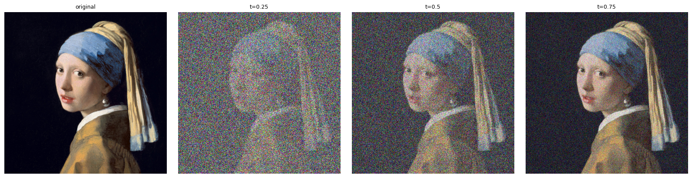
Figure 1: Interpolation between the original image and Gaussian noise to create noisy training inputs.
1.2: Classical Denoising
This section uses Gaussian blur as a baseline to denoise images without using Flow model. We can rewrite the equation from 1.1 as: $$ \frac{x_t}{t} = \frac{1-t}{t} \epsilon + x_1; \quad \hat{x}_1^{\text{blur}} = G_\sigma \left(\frac{x_t}{t}\right) $$The results of applying Gaussian blur to denoise the images are shown in Figure 2. As the noise level increases, the effectiveness of Gaussian blur in denoising the images decreases, which means that we have to use larger values of \(\sigma\) for denoising.
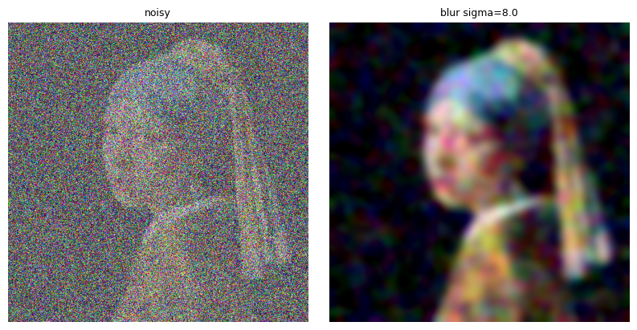
Figure 2(a): \(t = 0.25\), Gaussian blur with \(\sigma = 8\).
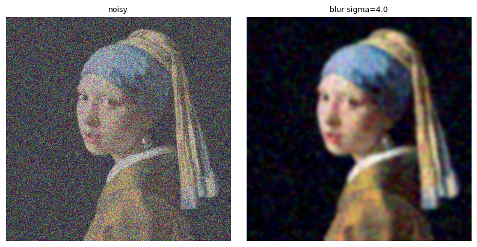
Figure 2(b): \(t = 0.5\), Gaussian blur with \(\sigma = 4\).
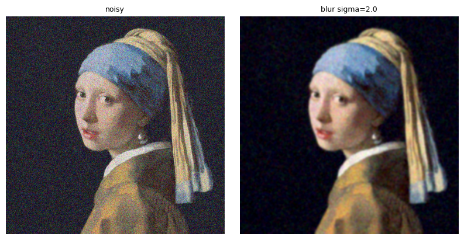
Figure 2(c): \(t = 0.75\), Gaussian blur with \(\sigma = 2\).
1.3: One-Step Denoising
With a pretrained flow model, we can perform one-step denoising by the following equation:
$$ \hat{x}_1 = x_t + (1-t) v_{\theta}(x_t, t, c) $$where \(v_{\theta}(x_t, t, c)\) is the velocity field predicted by the pretrained flow model. \(x_t\) is the noisy image at time step \(t\), and \(c\) represents the conditioning information.
The one-step denoising results are shown in Figure 3.
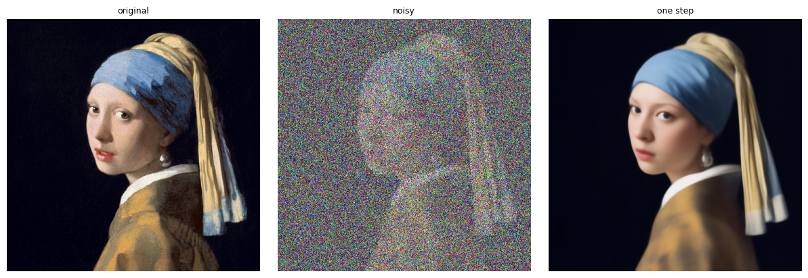
Figure 3(a): One-step denoising at \(t = 0.25\). Left to right: original, noisy input, one-step estimate.
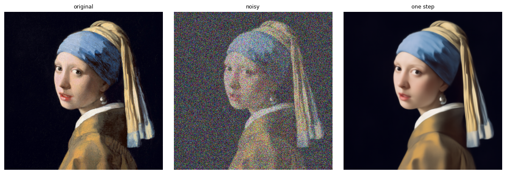
Figure 3(b): One-step denoising at \(t = 0.5\). Left to right: original, noisy input, one-step estimate.
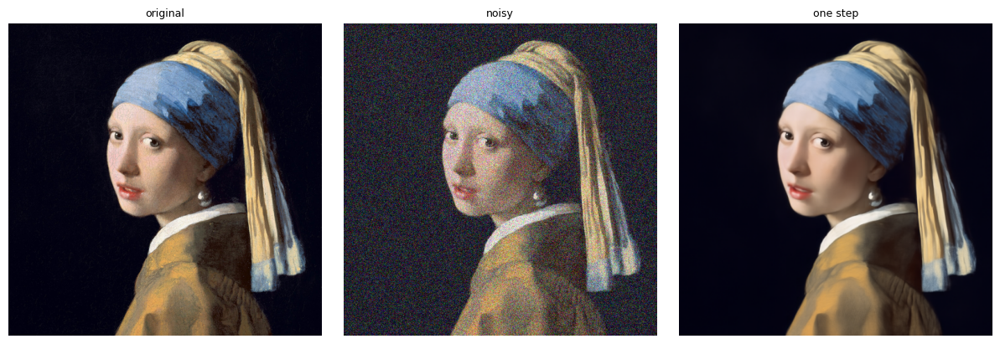
Figure 3(c): One-step denoising at \(t = 0.75\). Left to right: original, noisy input, one-step estimate.
1.4: Visualizing Velocity
In 1.3, we added \((1-t)\hat{v}_{t}\) to the noisy image to estimate the clean image. Since we know the original image, we know exactly what should be added to the noisy image at each time step. The predicted update by the model is \((1-t) v_{\theta}(x_t, t, c) = (1-t)\hat{v}_{t}\), and the ground truth update is \(x_1 - x_t = (1-t)v_{gt}\), where \(x_1\) is the original clean image.
For the error heatmap, we use root-mean-square (RMS) error between the predicted update and the ground truth update at each pixel: $$ E_t = \sqrt{\text{mean}_\text{RGB} \left[(1-t) (\hat{v}_{t} - v_{gt}) \right]^2} $$ Figure 4 shows the visualization of the velocity field and the corresponding error heatmap.
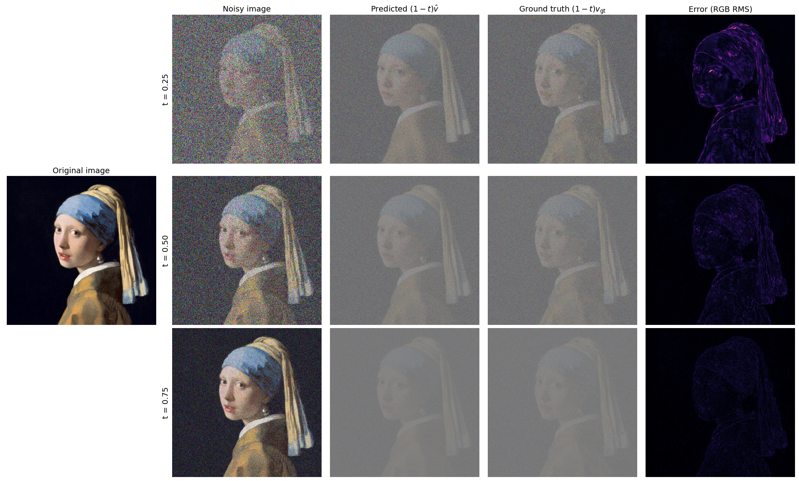
Figure 4: Visualization of the velocity field and the corresponding error heatmap
1.5: Iterative Denoising with Euler Sampling
One-step denoising can be inaccurate and we can use Euler integration: $$ x_{t + h} = x_t + h v_{\theta}(x_t, t, c) $$ where \(h = 0.02\) is the step size. Figure 5 shows the Euler denoising trajectory from \(t=0.5\) to \(t=1\) and Figure 6 represents the comparison between one-step denoising and Euler denoising. We can observe that Euler denoising provides a smoother trajectory and results in better denoising performance compared to one-step denoising.
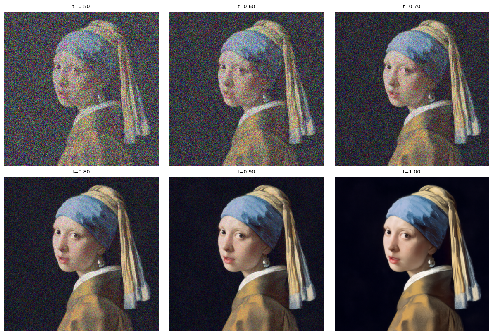
Figure 5: Euler denoising trajectory
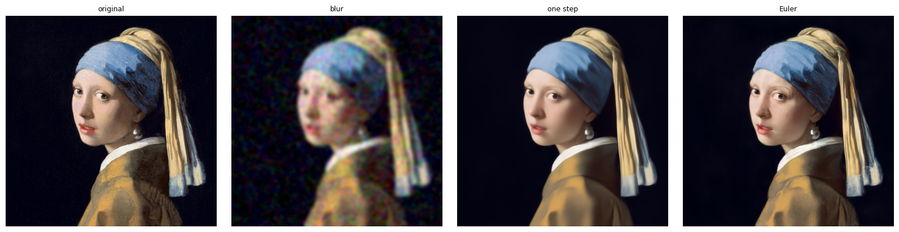
Figure 6: One-step denoising and Euler denoising comparison
1.6: Generating Images from Noise
In this section, we use euler_sample function to generate images from scratch.
We start by setting t_start = 0 and passing pure Gaussian noise as
x_start. Figure 7 shows some samples generated from noise using Euler denoising.
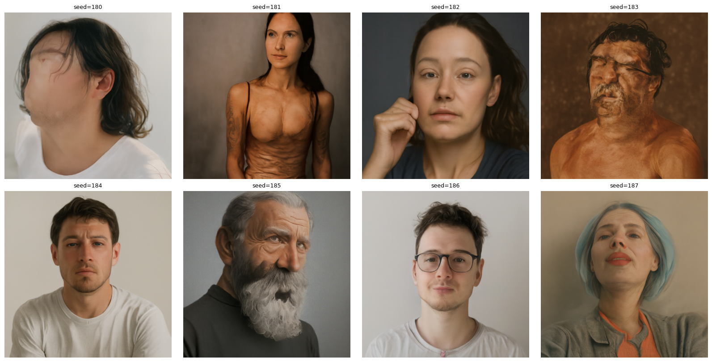
Figure 7: Some samples generated from noise using Euler integration
2: Conditional Generation and Guidance
Conditional generation means generating an image given information such as a text prompt.
2.1: Classifier-Free Guidance (CFG)
To improve the quality of images generated from noise, we can use CFG. CFG evaluates the same image and time with a conditional prompt (\(v_c\)) and an empty-string prompt (\(v_u\)). Combine them using: $$ v_\text{cfg} = v_c + w (v_c - v_u) $$ where \(w\) is the guidance weight, and \(w=0\) gives ordinary conditional sampling \((v_\text{cfg}(w=0) = v_c)\). I use \(w = 7\).
Figure 8 shows some samples generated from noise using Euler denoising with classifier-free guidance, their performances are way better than those without guidance.
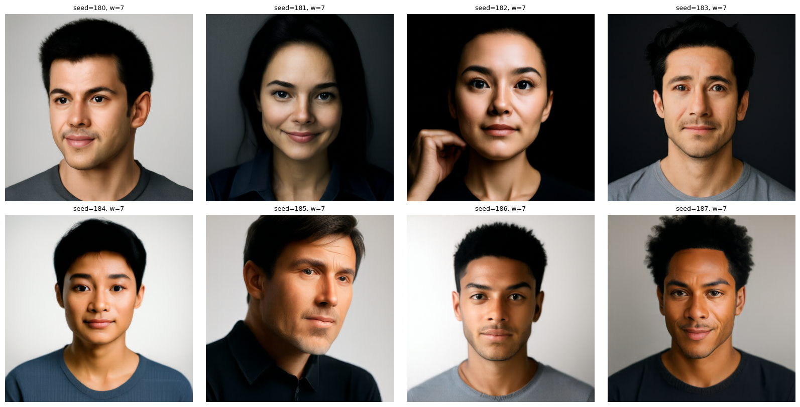
Figure 8: Some samples generated from noise using Euler integration with classifier-free guidance
3: Creative Applications
Use flow sampling to edit existing images and generate optical illusions.
3.1: Image-to-Image Editing
Denoising process forces a noisy image back onto the manifold of natural images, which means that we can edit existing images by adding noise and then denoising them back onto the natural image manifold. Figures 9, 10 and 11 show some examples.
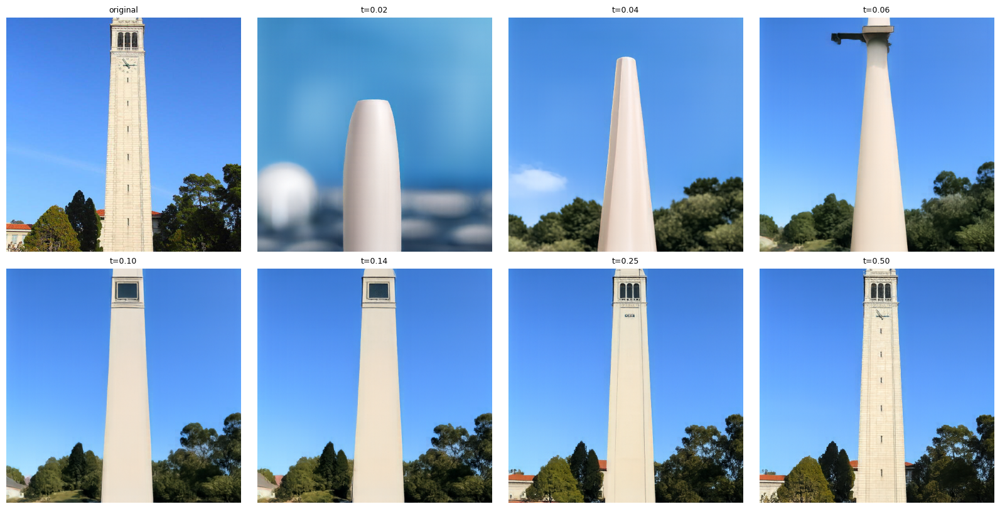
Figure 9: Edited campanile image
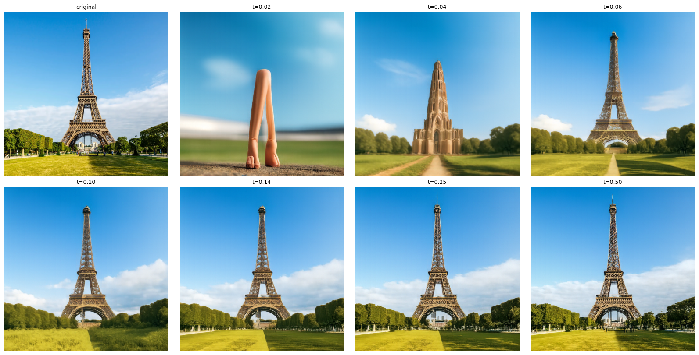
Figure 10: Edited eiffel tower image
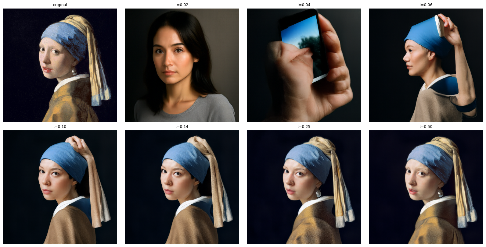
Figure 11: Edited meisje image
Editing Hand-Drawn and Web Images
Figure 12 shows an example from web, which is Picasso's drawing. Figures 13 and 14 show examples of editing self drawings.
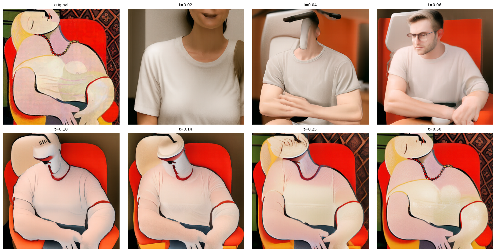
Figure 12: Edited Picasso's drawing
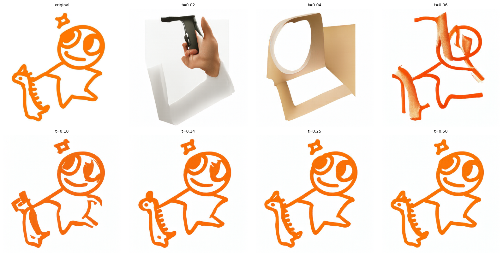
Figure 13: Edited self drawing
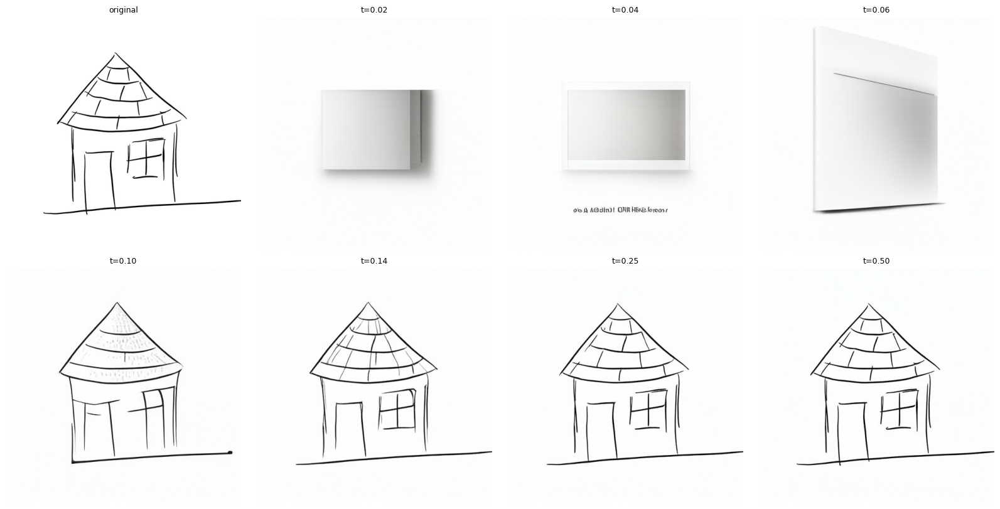
Figure 14: Edited self drawing
3.2: Text-Guided Image Editing
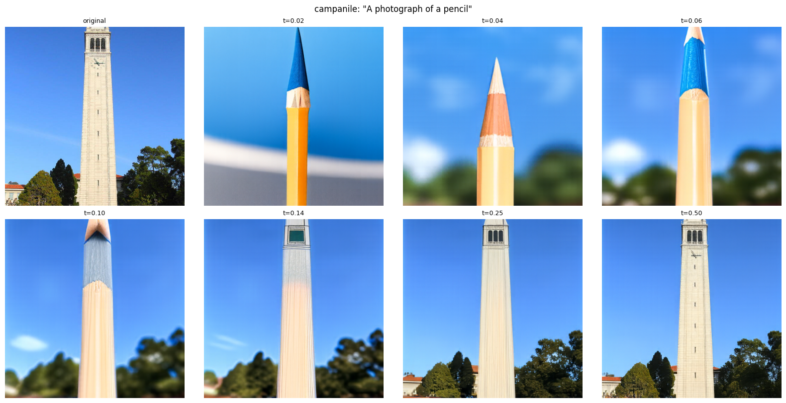
Figure 15: Campanile to pencil
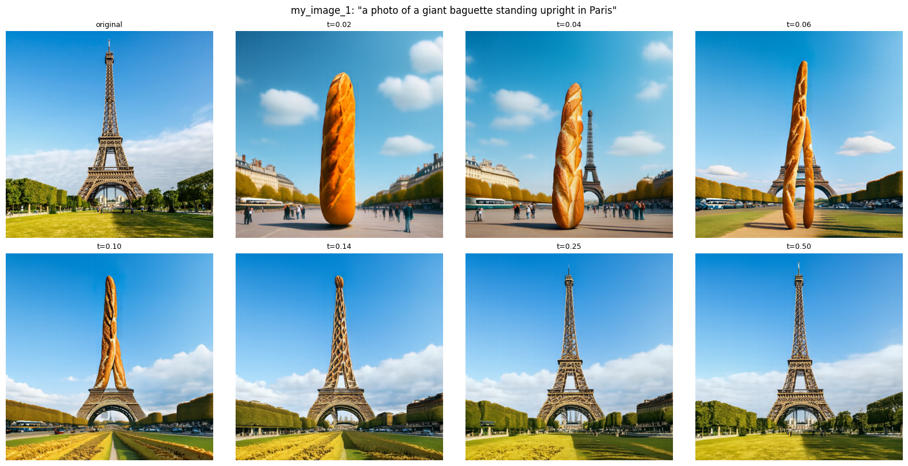
Figure 16: Eiffel Tower to baguette
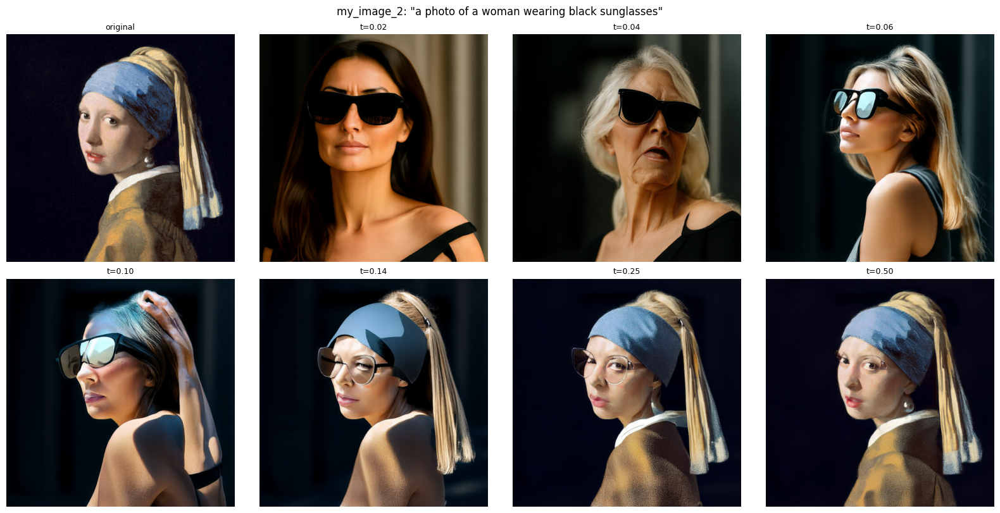
Figure 17: Meisje drawing to woman with glasses
3.3: Visual Anagrams
To create optical illusions with flow models, we will denoise an image \(x_t\) at step \(t\) with prompt \(p_1\) and obtain velocity estimate \(v_1\). But at the same time, we will flip \(x_t\) upside down (rotate it by 180 degrees) and denoise with the prompt \(p_2\) to obtain velocity estimate \(v_2\). Then, we can rotate \(v_2\) back and average the two velocity estimates. Finally, we can perform a Euler step with the averaged velocity. The equations are: $$ v_1 = v_{\text{cfg}} (x_t,t,p_1)$$ $$v_2 = \text{flip}\left( v_{\text{cfg}} (\text{flip}(x_t),t,p_2) \right)$$ $$v_{\text{avg}} = \frac{v_1 + v_2}{2}$$
Figures 18 and 19 show two visual anagrams. The left view is the generated image, and the right view is the same image rotated by 180 degrees.
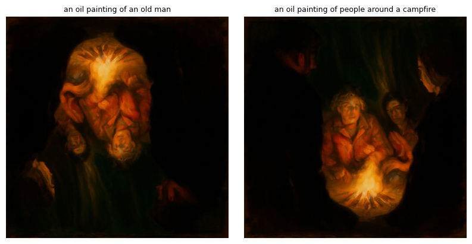
Figure 18: Upright: "an oil painting of an old man". Rotated: "an oil painting of people around a campfire".
Figure 19: Upright: "a lithograph of a snowy mountain village". Rotated: "a lithograph of a horse".
3.4: Hybrid Images
Hybrid images combine the low frequencies of one prompt with the high frequencies of another. At each Euler step, the velocity is: $$ v = \text{lowpass}(v_a) + v_b - \text{lowpass}(v_b) $$ where \(v_a\) and \(v_b\) are the CFG velocities.
Figure 20: Close: "a lithograph of a waterfall". Distant: "a lithograph of a skull".
Figure 21: Close: "a lithograph of a forest". Distant: "a lithograph of a cat".
Bells & Whistles
More Visual Anagrams
I tried two more transforms from the Visual Anagrams paper: a 90-degree rotation and a color inversion \(F(x) = -x\).
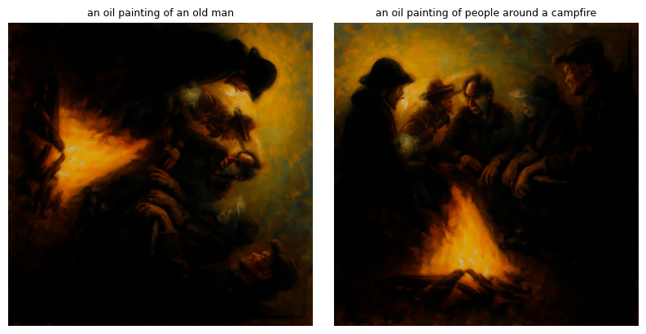
Figure 22: Rotate 90 degrees. Original: "an oil painting of an old man". Rotated: "an oil painting of people around a campfire".
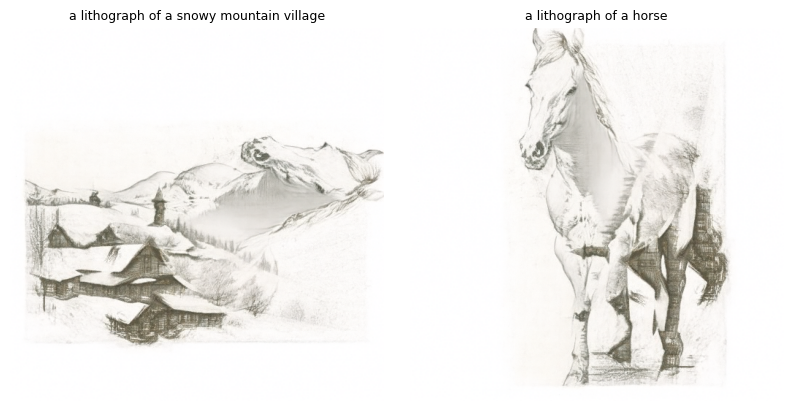
Figure 23: Rotate 90 degrees. Original: "a lithograph of a snowy mountain village". Rotated: "a lithograph of a horse".
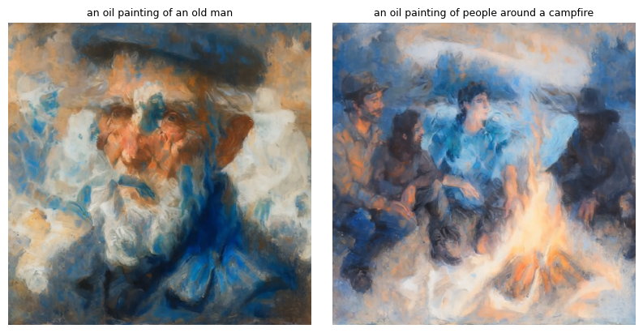
Figure 24: Color inversion. Original: "an oil painting of an old man". Inverted: "an oil painting of people around a campfire".
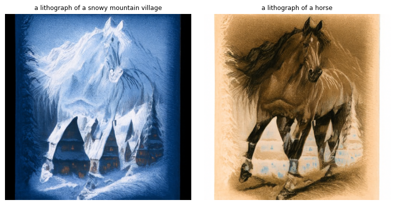
Figure 25: Color inversion. Original: "a lithograph of a snowy mountain village". Inverted: "a lithograph of a horse".
Course Logo
I designed a course logo by editing the Cal logo with the prompt "a logo of the Golden Gate Bridge, blue and gold colors, simple". Small \(t\) gives the model more freedom to draw the bridge, while larger \(t\) keeps the original logo. I like \(t = 0.06\) the most, which keeps the Cal lettering with the bridge.
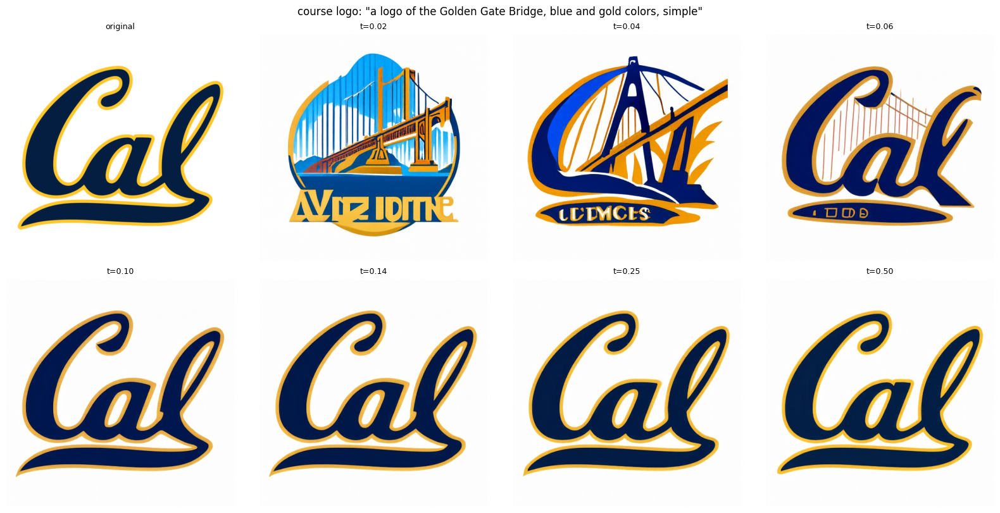
Figure 26: Text-guided editing of the Cal logo at different starting times \(t\).
Part B: Flow Matching from Scratch
1: Training a Single-Step Denoising UNet
1.1: Implementing the UNet
See partb.ipynb for the implementation details of the UNet.
1.2: Using the UNet to Train a Denoiser
We add Gaussian noise to a clean digit with \(z = x + \sigma \epsilon\), \(\epsilon \sim \mathcal{N}(0, I)\), and train the UNet to recover \(x\) with an L2 loss. Figure 27 shows the noising process for different \(\sigma\).
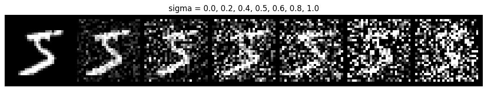
Figure 27: Noisy images with \(\sigma = 0.0, 0.2, 0.4, 0.5, 0.6, 0.8, 1.0\).
1.2.1: Training
I train the denoiser with \(\sigma = 0.5\), hidden dimension \(D = 128\), batch size 256, Adam with learning rate \(10^{-4}\), for 5 epochs. Figure 28 shows the training loss, and Figure 29 shows the test results after epoch 1 and epoch 5. After epoch 1 the outputs still have some blur and leftover noise, and after epoch 5 they are clean and sharp.
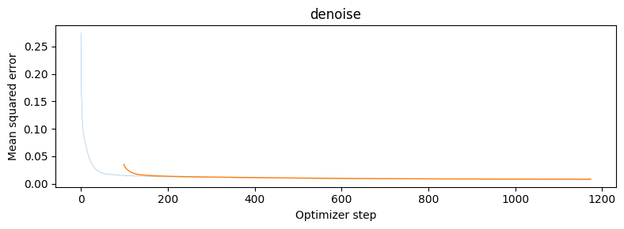
Figure 28: Training loss of the one-step denoiser.
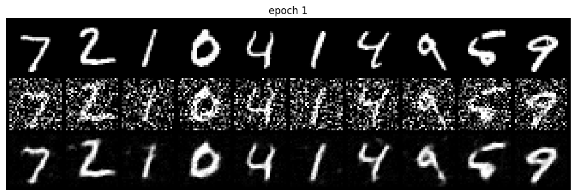
Figure 29(a): Test results after epoch 1. Top: clean digits. Middle: noisy inputs with \(\sigma = 0.5\). Bottom: denoised outputs.
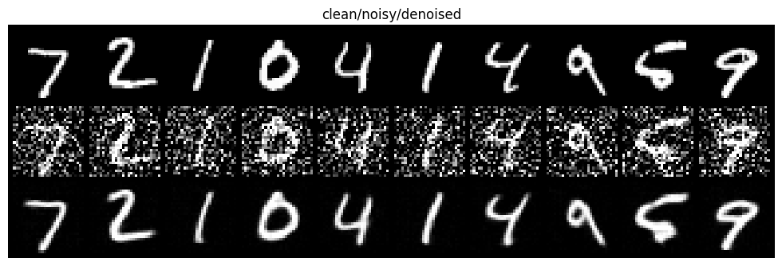
Figure 29(b): Test results after epoch 5. Top: clean digits. Middle: noisy inputs with \(\sigma = 0.5\). Bottom: denoised outputs.
1.2.2: Out-of-Distribution Testing
The denoiser is trained only on \(\sigma = 0.5\). It still works well for smaller noise, but it fails when \(\sigma \geq 0.8\), as shown in Figure 30.
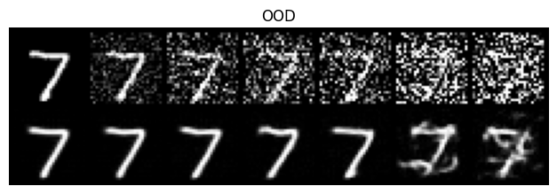
Figure 30: Top: noisy inputs with \(\sigma = 0.0, 0.2, 0.4, 0.5, 0.6, 0.8, 1.0\). Bottom: denoised outputs.
1.2.3: Denoising Pure Noise
Figure 31 shows the training loss when denoising pure noise. Figures 32(a) and 32(b) show the outputs for pure noise inputs after epoch 1 and epoch 5, respectively. The loss figure shows that the loss decreases quickly at first but then plateaus. The outputs in Figure 32 all look like the same blurry digit, and they don't improve much from epoch 1 to epoch 5. This is because the input is pure noise and carries no information about the target, so the model cannot know which digit to reconstruct. Under the MSE loss, the best it can do is to output the average of all training digits, which is exactly the blurry "mean digit" we see.
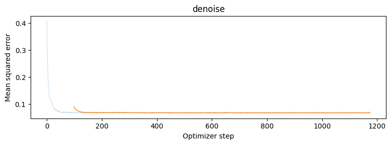
Figure 31: Training loss when denoising pure noise.
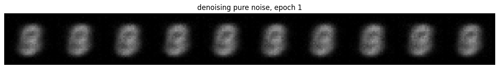
Figure 32(a): Outputs for pure noise inputs after epoch 1.
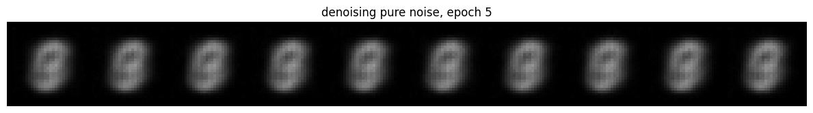
Figure 32(b): Outputs for pure noise inputs after epoch 5.
2: Flow Matching
2.1: Implementing a Time-Conditioned UNet
For flow matching, we interpolate between noise \(x_0 \sim \mathcal{N}(0, I)\) and a clean image \(x_1\), and the UNet predicts the velocity: $$ x_t = (1-t)x_0 + t x_1, \quad \mathcal{L} = \left\| (x_1 - x_0) - u_\theta(x_t, t) \right\|^2 $$ The time \(t\) is fed into the UNet through two FCBlocks.
2.2: Training the Time-Conditioned UNet
I train with \(D = 64\), batch size 64, Adam with initial learning rate \(10^{-2}\), and an exponential scheduler with \(\gamma = 0.1^{1/10}\), for 10 epochs.
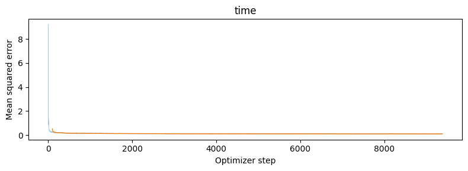
Figure 33: Training loss of the time-conditioned UNet.
2.3: Sampling from the Time-Conditioned UNet
Starting from pure noise, I run 50 Euler steps \(x \leftarrow x + \frac{1}{T} u_\theta(x, t)\). The samples get cleaner with more training, but some of them still do not look like real digits.
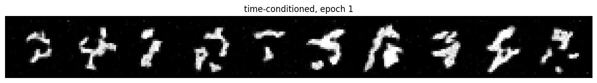
Figure 34(a): Samples after epoch 1.
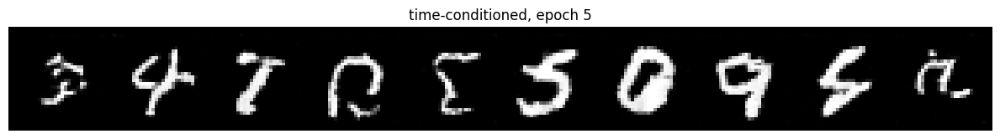
Figure 34(b): Samples after epoch 5.
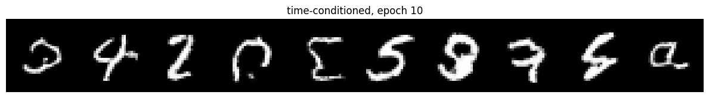
Figure 34(c): Samples after epoch 10.
2.4: Implementing a Class-Conditioned UNet
To control which digit is generated, the class label \(c\) is passed in as a one-hot vector through two more FCBlocks. The class embedding scales the features and the time embedding shifts them: $$ \text{unflatten} = c_1 \cdot \text{unflatten} + t_1, \quad \text{up}_1 = c_2 \cdot \text{up}_1 + t_2 $$ During training, the class is dropped with probability 0.1, so the same model also learns the unconditional velocity. At sampling time, I use classifier-free guidance with \(\gamma = 5\): $$ u = u_{\text{uncond}} + \gamma \left( u_{\text{cond}} - u_{\text{uncond}} \right) $$
2.5: Training the Class-Conditioned UNet
To see if the scheduler is necessary, I also train the same model without it, using a constant learning rate of \(10^{-3}\). The initial learning rate \(10^{-2}\) is too large to keep for 10 epochs, so I use a smaller one. As shown in Figure 35, both runs reach a similar final loss. The constant learning rate starts with a smaller loss spike, but its loss stays a bit noisier, because the step size never decays.
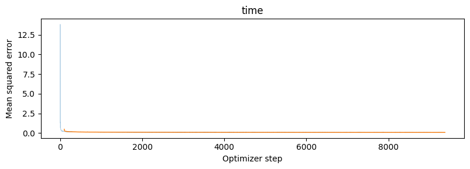
Figure 35(a): Training loss with the exponential scheduler, initial learning rate \(10^{-2}\).
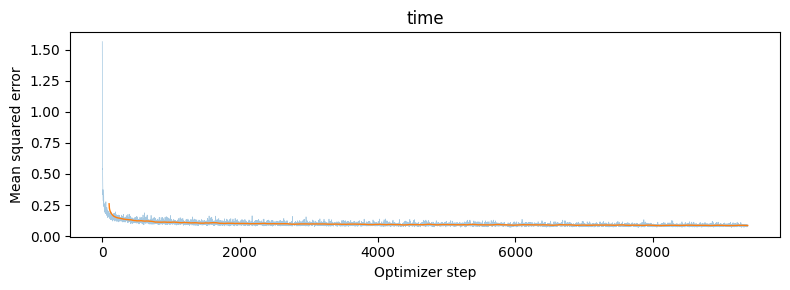
Figure 35(b): Training loss without a scheduler, constant learning rate \(10^{-3}\).
2.6: Sampling from the Class-Conditioned UNet
Each grid shows four samples of every digit, generated with 300 Euler steps and \(\gamma = 5\). After one epoch, most digits are recognizable, but the strokes are still thick and broken. After 10 epochs they are clean and varied.
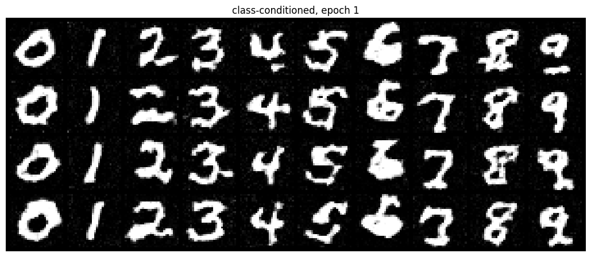
Figure 36(a): Class-conditioned samples after epoch 1.
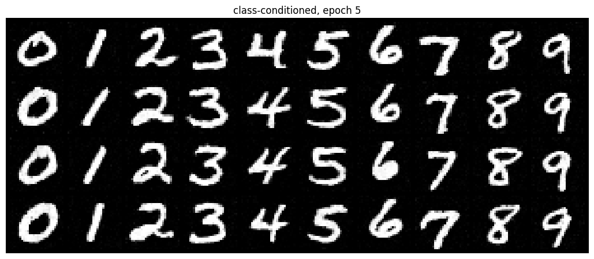
Figure 36(b): Class-conditioned samples after epoch 5.
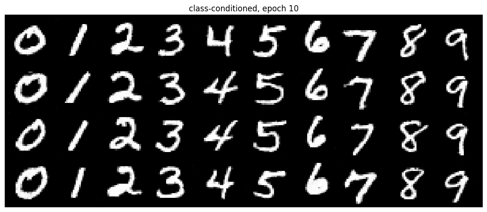
Figure 36(c): Class-conditioned samples after epoch 10.
Without the Learning Rate Scheduler
Figure 37 shows the samples generated by the model without a learning rate scheduler after epochs 1, 5, and 10. For epoch 1, the samples are already quite clean compared to the scheduled model in Figure 36(a). For epoch 5 and 10, the samples continue to improve and become cleaner, but I don't notice a significant difference compared to the scheduled model.
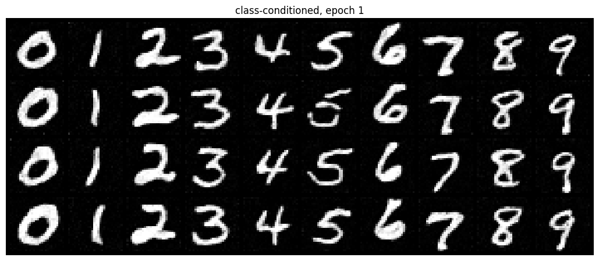
Figure 37(a): Samples without a scheduler (constant learning rate \(10^{-3}\)) after epoch 1.
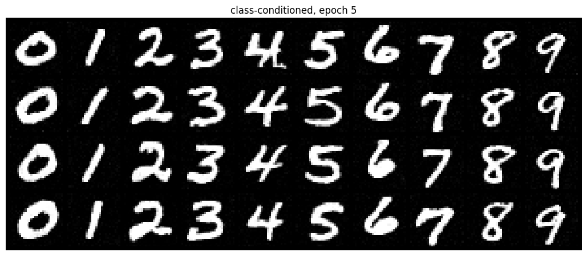
Figure 37(b): Samples without a scheduler (constant learning rate \(10^{-3}\)) after epoch 5.
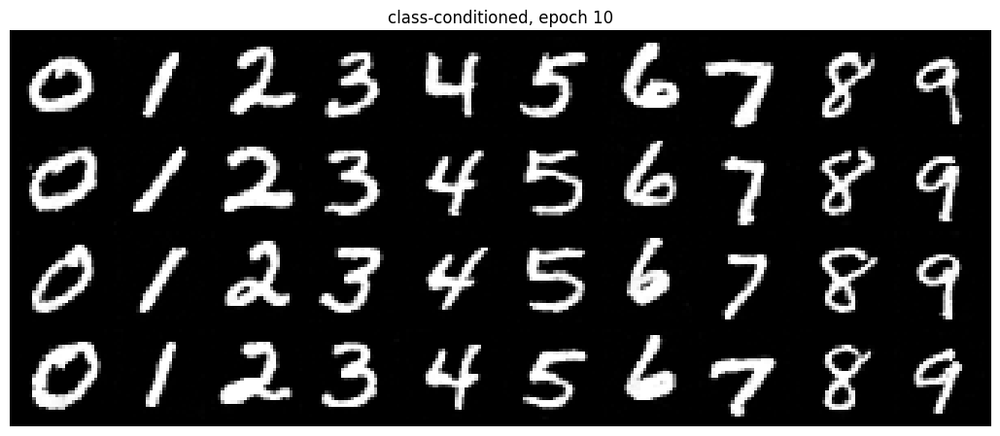
Figure 37(c): Samples without a scheduler (constant learning rate \(10^{-3}\)) after epoch 10.
Bells and Whistles for Part 2.2/2.3
A better time-conditioned only UNet
Our time-conditioning only UNet in part 2.3 is actually far from perfect. Many samples in Figure 34(c) do not look like real digits. To improve it, I made three changes:
- Increase the hidden dimension from \(D = 64\) to \(D = 128\), so the model has more capacity.
- Train for 20 epochs instead of 10. The exponential scheduler is rescaled to \(\gamma = 0.1^{1/20}\), so the learning rate still decays from \(10^{-2}\) to \(10^{-3}\).
- Sample with 300 Euler steps instead of 50, which makes each step smaller and more accurate.
Figure 38 shows the training loss, which keeps decreasing slowly through all 20 epochs. Figures 39(a) and 39(b) show the new samples, which are clearly better and most of them are now recognizable digits, such as 2, 0, 5, 8 and 9. A few samples are still ambiguous.
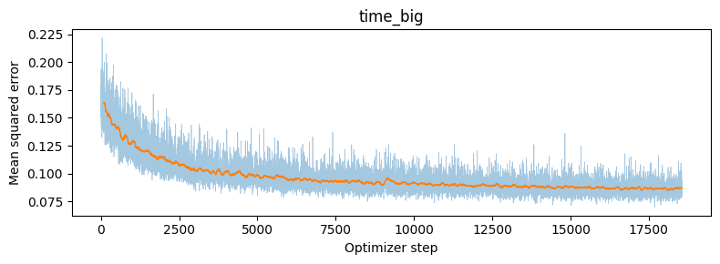
Figure 38: Training loss of the improved time-conditioned UNet. The first 200 steps are skipped for a clearer scale.
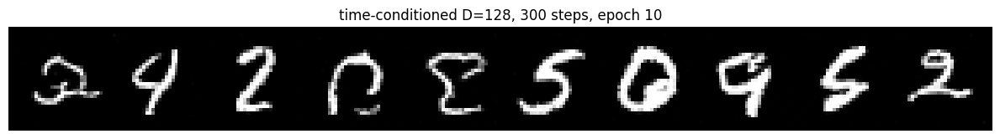
Figure 39(a): Samples from the improved model after epoch 10.
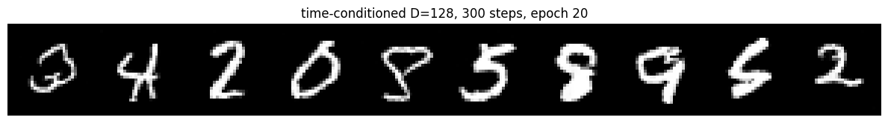
Figure 39(b): Samples from the improved model after epoch 20.